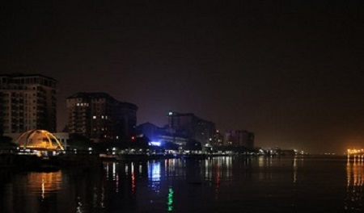
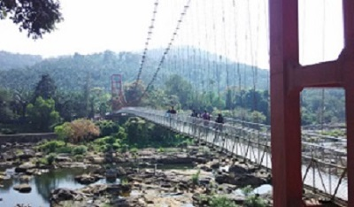
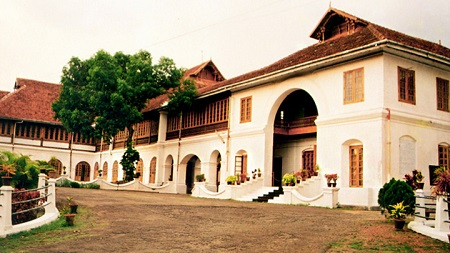

Marine Drive is a picturesque promenade in Kochi, India.It is built facing the backwaters, and is a popular hangout for the local populace. Despite its name, no vehicles are allowed on the walkway. Marine Drive is also an economically thriving part of the city of Kochi. With several shopping malls it is as an important centre of shopping activity in Kochi. Major fast food joints, including Marrybrown, DiMark, Coffee Bar are present along the walkway. The view of the setting and rising sun over the sea mouth, and the gentle breeze from the Vembanad Lake has made Marine Drive an important tourist destination in Kochi. Hundreds of people (both natives, and tourists) throng the walkway during the evenings.There are also several boat jetties along the walkway.
The walkway has three bridges: the Rainbow bridge, the Chinese Fishing Net Bridge and the House Boat Bridge.

Marine Drive

Ezhattumugham
Ezhattumugham, situated along the Chalakudy River, is a tourist village in the Ernakulam district of Kerala, located in the southwestern part of India.Ezhattumugham has many walking paths, campgrounds, and palm oil farms. It has recently become the location of many movie sets, in part due to the beauty of the Chalakudy river
The Hill Palace Museum was the official residence of the erstwhile rulers of Kochi. Built in 1865, it is now famous for being a full-fledged Ethno-Archaeological Museum and Kerala's first-ever Heritage Museum. The palace complex itself comprises 49 buildings and is built in the traditional Kerala style of architecture. It has over 52 acres of terraced land around it.One can see oil paintings, murals, sculptures, manuscripts and belongings of the Kochi royal family. Antique ceramics from the Far East, Kudakkallu (tombstone), Thoppikkallu (hood stone), laterite memorials and wooden memorials from ancient civilisations like the Indus Valley and Harappa can also be found here. It even has a gallery housing contemporary art. It is our pride to have relics of such value and significance placed here.

Hill Palace Museum